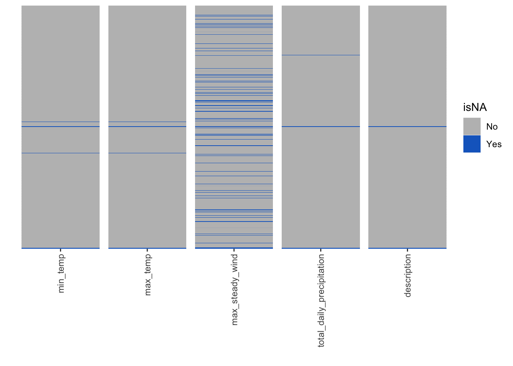
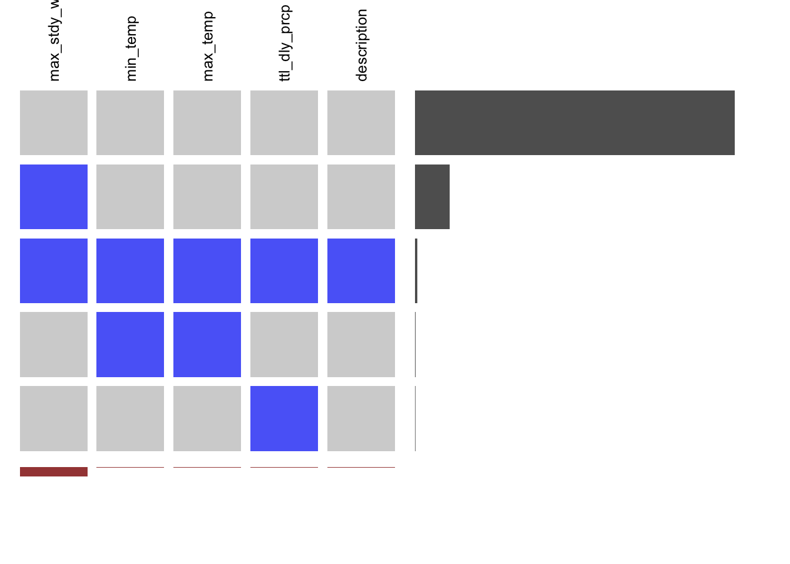

Chapter 4 Missing values
We would like to explore some meaningful patterns based on the distribution of missing values ie.NAs from our weather dataset. (Note: given a fact that our Bike datasets have no missing values, the weather dataset would be our sole data.table to analyze NAs.)
Data table: dat.dt.RData Varibles of our concern: ‘min_temp’, ‘max_temp’, ‘max_steady_wind’, ‘total_daily_precipitation’, ‘description’
4.1 Heatmap for overall pattern
Firstly, we would like to present an overall missing-value distribution of continuous days from 2019-01-01 to 2020-12-31 (total 731 days) and the plot shows:
- X : 6 most relevent variables Y: missing patterns (each day from 2019-01-01 to 2020-12-31)
- Vertically, variable ‘max_steady_wind’ has most missing values.
- Horizontally, missing values concentrate at the end of the year 2019 and year 2020

4.2 Visna() for overall pattern
Visna() is another method to explore the potential patterns of missing-value distribution of continuous days (731 days)
- X : 6 most relevent variables Y: missing patterns (each day from 2019-01-01 to 2020-12-31)
- Vertically, variable ‘max_steady_wind’ has the most missing values as it ranks number-one at the bottom column-sort.
- Horizontally, for missing values patterns, pattern ‘max_steady_wind’ took place most frequently up to 71 times, which means there are 71 rows of data with ‘max_steady_wind’ value missing as NA. The next pattern is ‘min_temp, max_temp, max_steady_wind, total_daily_precipitation, description’ with frequency 5 times, which means 5 rows of data miss values for all variables. The complete pattern-rank goes from top to bottom as the right row-sort shows.

## max_steady_wind min_temp max_temp total_daily_precipitation description
## 1 0 0 0 0 0
## 3 1 0 0 0 0
## 5 1 1 1 1 1
## 4 0 1 1 0 0
## 2 0 0 0 1 0
## attr(,"mar")
## attr(,"mar")$rm
## [,1]
## [1,] 652
## [2,] 71
## [3,] 5
## [4,] 2
## [5,] 1
##
## attr(,"mar")$cm
## [,1] [,2] [,3] [,4] [,5]
## [1,] 0.1039672 0.009575923 0.009575923 0.008207934 0.006839945
##
## attr(,"orders")
## attr(,"orders")[[1]]
## [1] 1 3 5 4 2
##
## attr(,"orders")[[2]]
## [1] 3 1 2 4 5